HOME
Kostaryka
Zaczęło się od banknotu 10 000 ¥ i zaproszenia do Japonii. Specjalny prezent ślubny od Konrada,
który w założeniu miał nas zmobilizować do wyjazdu do Kraju Kwitnącej Wiśni na dwa tygodnie.
Ostatecznie wygnał nas na ponad dwa miesiące do Ameryki Środkowej, a to dopiero początek!
Podróż
Podróż samolotami minęła dość szybko i bezboleśnie, bo lecieliśmy w nocy i można było się po prostu
zdrzemnąć (wielokrotnie). Dziewczynki też nie protestowały i wygodnie rozciągnęły się na swoich fotelach
na ponad 10h lotu (+2h międzylądowanie + 3h kolejny lot)
Po przylocie przywitał nas wschód Słońca (nareszcie! po ponad 20h w ciemnościach) i średnio uczciwa
firma wynajmująca auta.
W końcu bardziej opłacało się wynająć taxi, “po znajomości” (pana ze “średnio uczciwej firmy”!)
udało się ściągnąć małego busa i pojechaliśmy. Taksówkarz “gnał” 80km/h, a droga w wielu miejscach
zatkany była retro ciężarówkami… do tego auto bez klimy, więc podróż trochę się dłużyła… zwłaszcza
rodzicom wymiotującego dziecka (Ala po mamie odziedziczyła dwie rzeczy: chorobę lokomocyjną i dziwne
paznokcie na małym palcu u stóp >_<).
W końcu ok południa dotarliśmy na Playa Flamingo i do naszego nowego domu :)
Widok z balkonu i sypialni :)
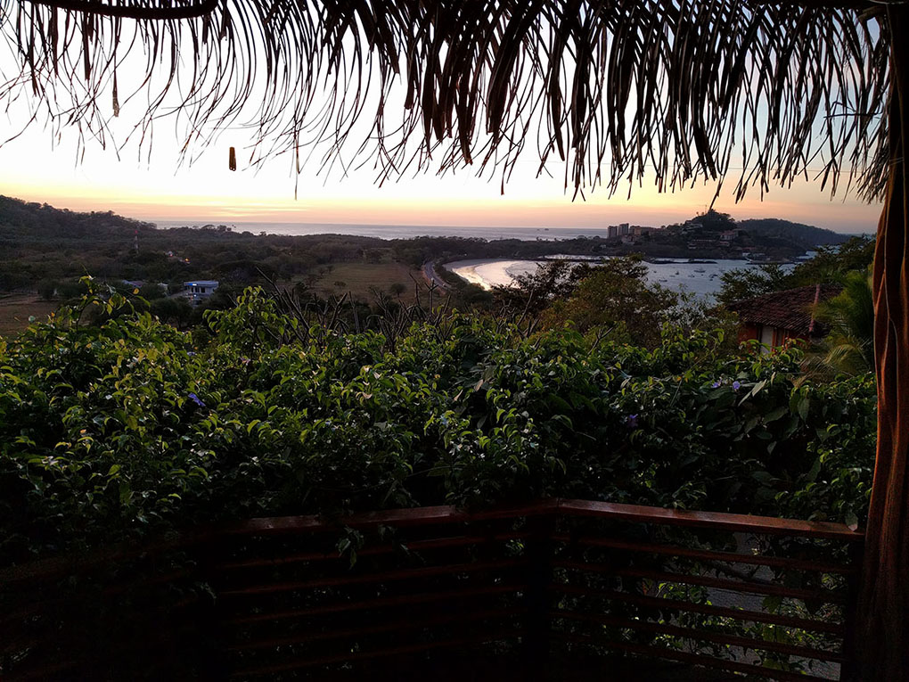
Jet lag
Chociaż jesteśmy 7 godzin do tyłu, to jet lag nie był wcale najgorszy, a nawet się przysłużył,
bo przestawiliśmy się bezboleśnie na pobudki o 6 rano.
Dni cały rok trwają tutaj ok 12h, wschód ok 6, zachód ok 18… nuuuda ;)
Video-czat z Barcelona o 5 rano...
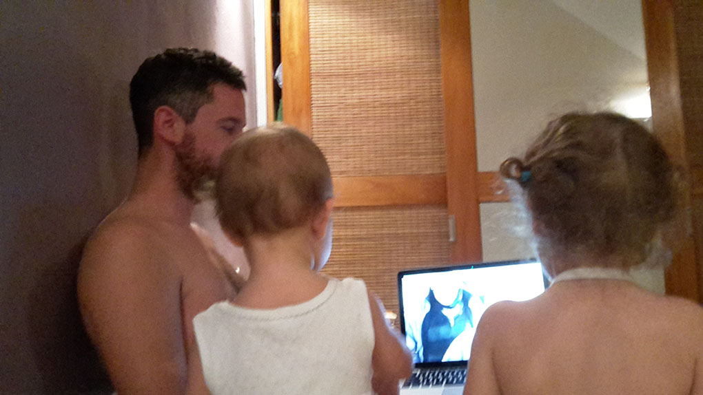
Jedzenie
Jest tu dość drogie. Jakby przeliczyć ceny w supermarketach, okazuje się, że wszystko wychodzi
ok 2-3 razy drożej niż w Pl… w restauracjach jest tylko 2 razy drożej :)
Pierwsze sniadanie
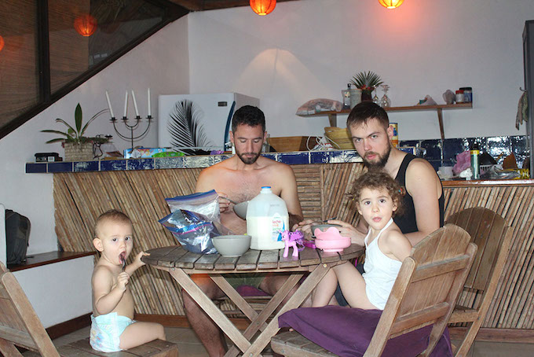
To kostarykańska włoszczyzna… jakby ktoś wiedział czym są małe okrągłe warzywa z prawej (żółte i
zielone),
będę wdzięczna za info!
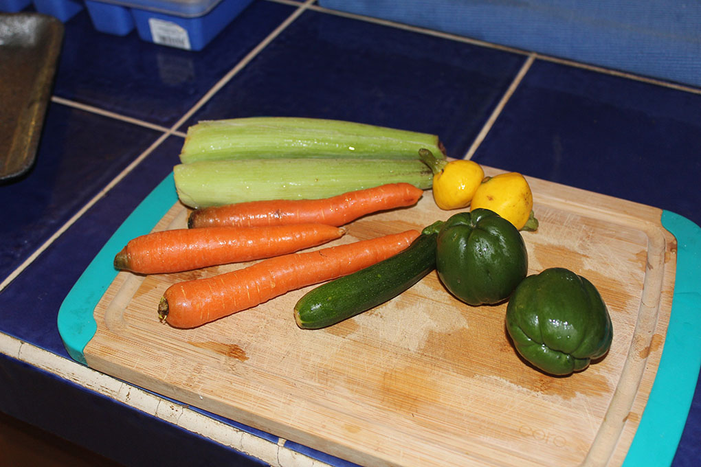
W restauracjach można zjeść całkiem nieźle, króluje ceviche (ryba marynowane w soku z limonki/cytryny),
guacamole i “casado”, czyli typowy obiad mężczyzny żonatego (fasolka + ryż + smażony banan + opcjonalnie kawałek
mięsa/ryby).
Miejscowi utrzymuja, ze "casado" nazwe zawdziecza temu, ze jest to pierwszy (nie stały) posiłek po slubie... :)
Zwierzaki nasze domowe
Przede wszystkim X-liardy mrówek, są wszędzie i zawsze. Nawet w muszli klozetowej…
jedzenie można przechowywać tylko w lodówce i dużych plastikowych, zapinanych workach.
Pół godziny nieostrożności i małe paskudy zaraz się częstują. Wyżerają też owoce z miski -_-
W domu mamy też czasem pająki...
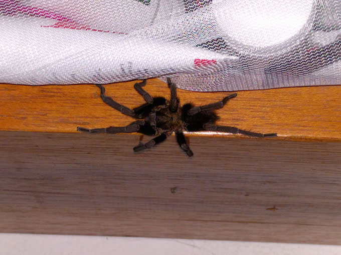
...i jaszczury :)
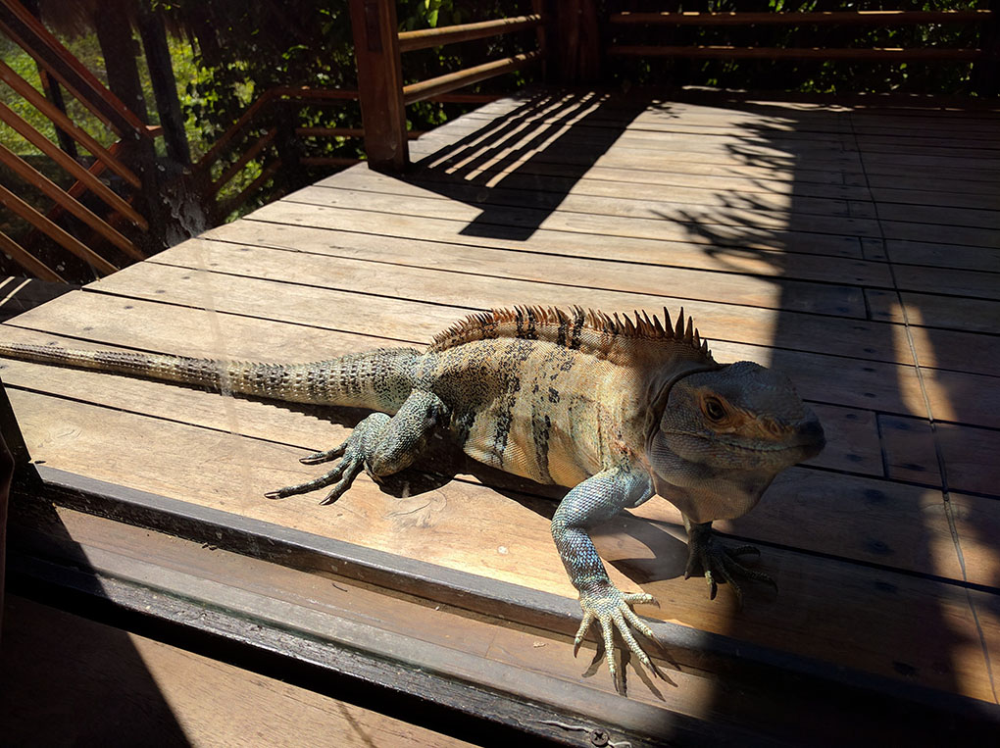
To ponoć najszybszy taki gad na świecie. Samce w porze godowej robią się pomarańczowe.
Jeden taki pomaranczowy grasuje u nas na balkonie, zapewne ze względu na jakże romantyczną scenerię. W efekcie
jesteśmy skazani na takie oto widoki:
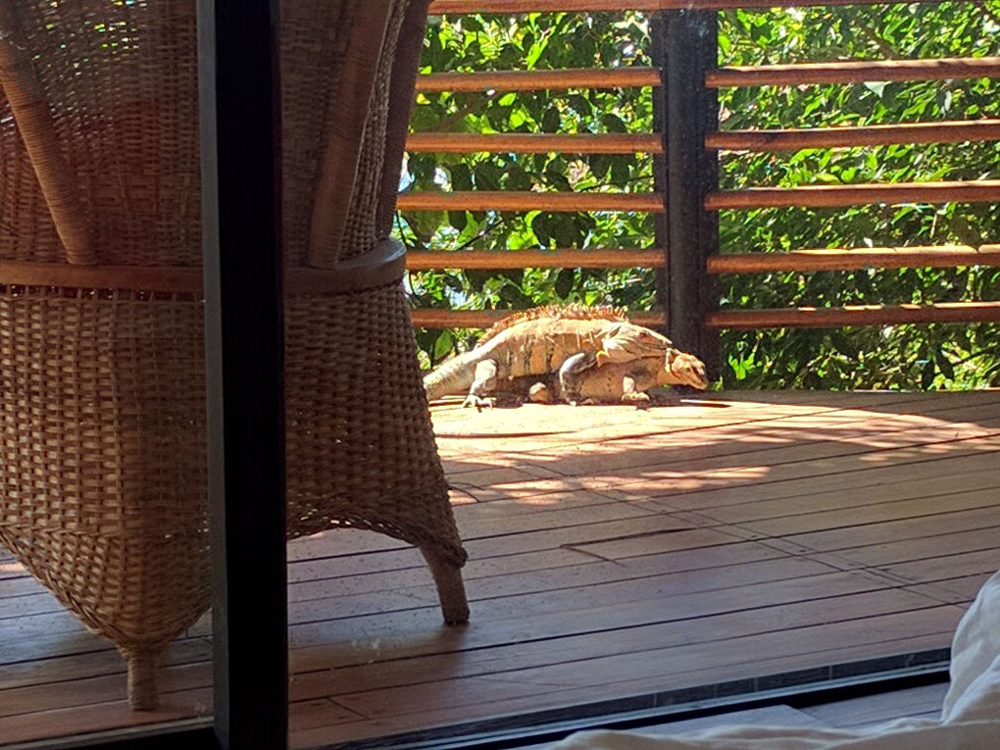
Czasem można oberwać w głowę gałęzią rzuconą (z premedytacją! ) przez jakąś małpę.
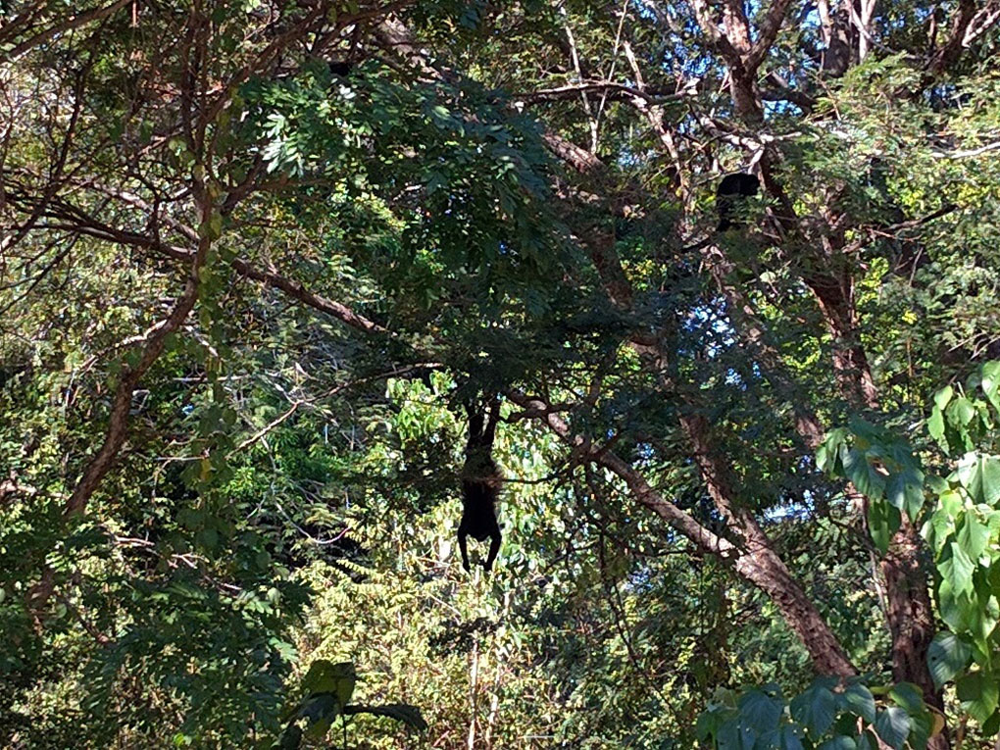

Koło balkonu pojawiają się też kolibry, ale tym dość ciężko zrobić zdjęcie w domowych warunkach.
Plaża
Dzień bez plaży, dniem straconym! Chociaż zwykle wychodzimy z domu dopiero po 15, wcześniej temperatury
i UV są dość ekstremalne…
Chłopaki wynajęli deskę do surfingu i trenują
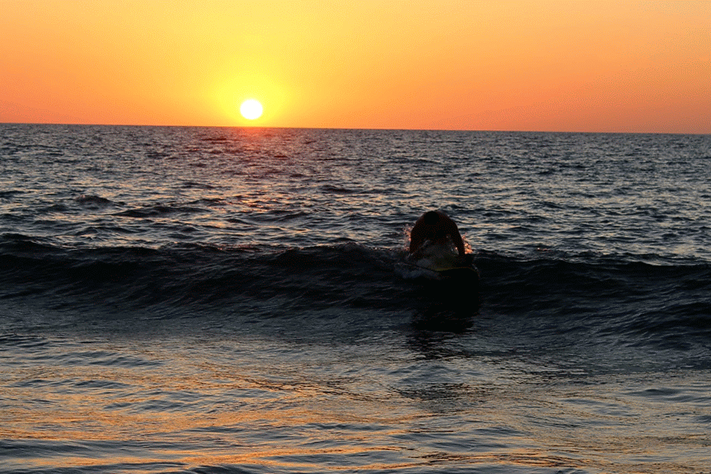
Mamuśka ćwiczy na sucho, bo boi się rekinów :P
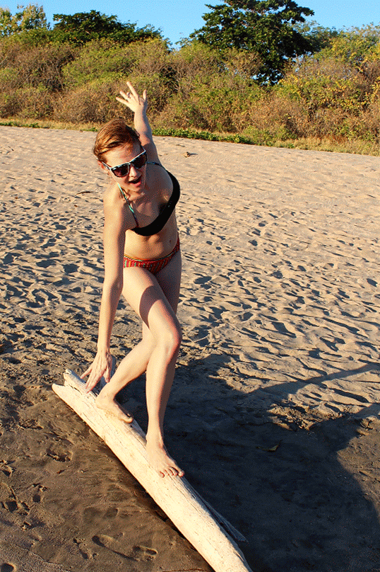
Dzieci są oczywiście zachwycone ogromną piaskownicą
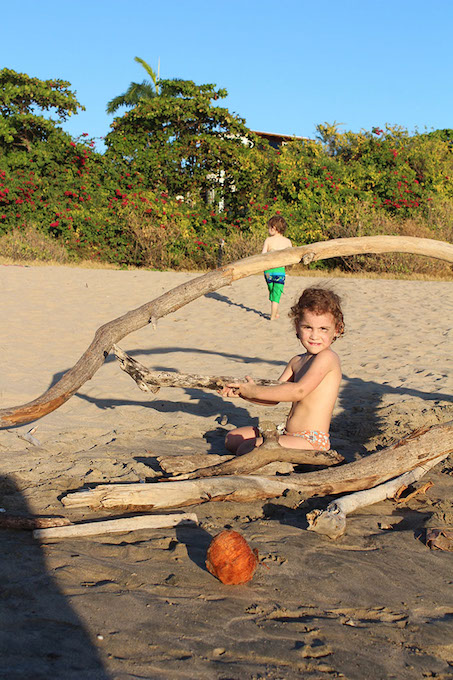
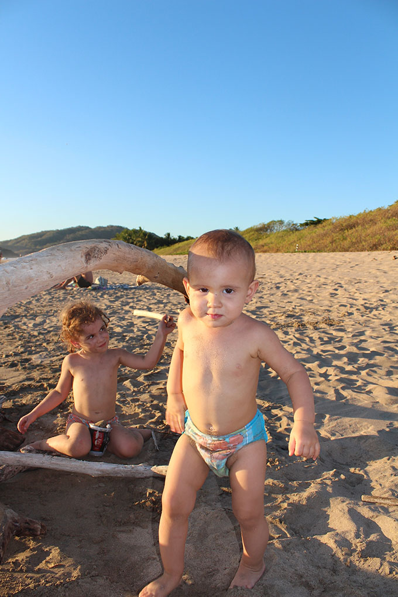
...i tak przyjemnie siedzi się na plaży aż do zachodu :)
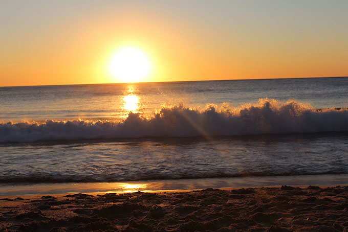